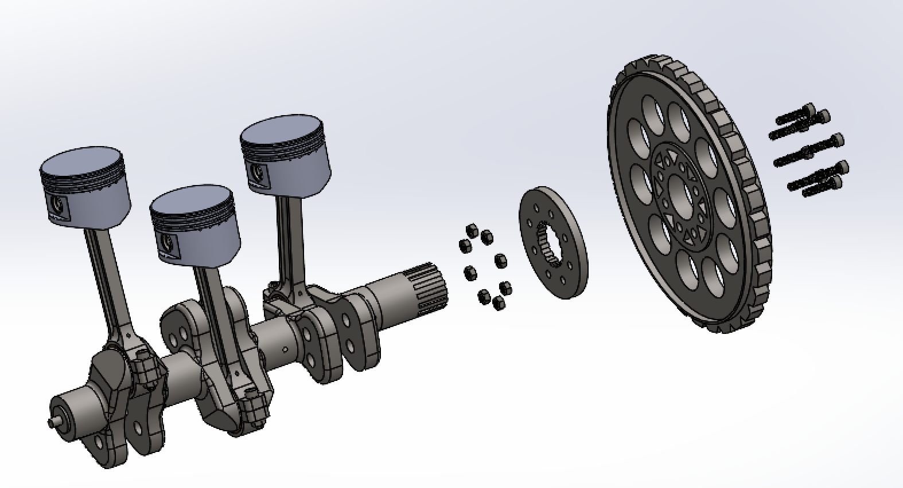

M.I.C.E. SC1650 — Motorcycle Engine Design


assets/projects/motorcycle-engine.jpgA full 15-week senior design project: a 1656 cc inline-3 sport-cruiser engine with a 10:1 compression ratio, pent-roof combustion chambers, port injection, and a DOHC valvetrain — targeting 125 hp and 109 lb-ft at 5000 RPM continuous service, packaged with a six-speed transmission, and passing 40 CFR 86.410-2006 for fuel emissions and 40 CFR 205.152 for noise. Team of ten split across CAD, analysis, and manufacturing groups. Deliverable was a ~300-page detailed design report.
My work sat on the analysis team. Structural analysis was run in SolidWorks Simulation to check part integrity for the loaded components under expected operating conditions, with parts respec'd where needed. I also owned the fuel efficiency modeling — a MATLAB power-balance model at cruising conditions that summed the power required to overcome aerodynamic drag, rolling resistance, and drivetrain losses, then converted required power to fuel consumption using the fuel-conversion efficiency framework from Heywood.
The emissions work modeled a catalytic converter downstream of the exhaust manifold, assuming 95% conversion efficiency for CO and 75% for NOx, and checked the outputs against the CFR limits. Speccing extended to bearing selection, fasteners, and OEM-sourced components across the analysis team's remit.